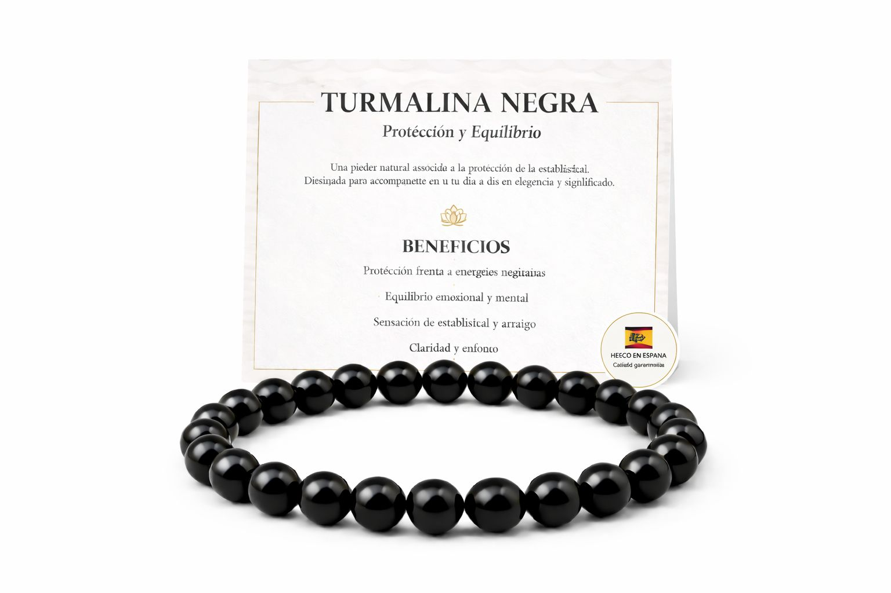

Cómo utilizarla
- Colócatela de forma cómoda en la muñeca.
- Ajusta el cierre sin apretar demasiado.
- Úsala en tu día a día como complemento personal.

Guía de producto
Aquí puedes explicar qué es, cómo usarla, cómo cuidarla y cualquier material adicional que quieras enseñar al cliente.
Aquí puedes añadir un PDF, imágenes, un vídeo o el texto que quieras mostrar al cliente.